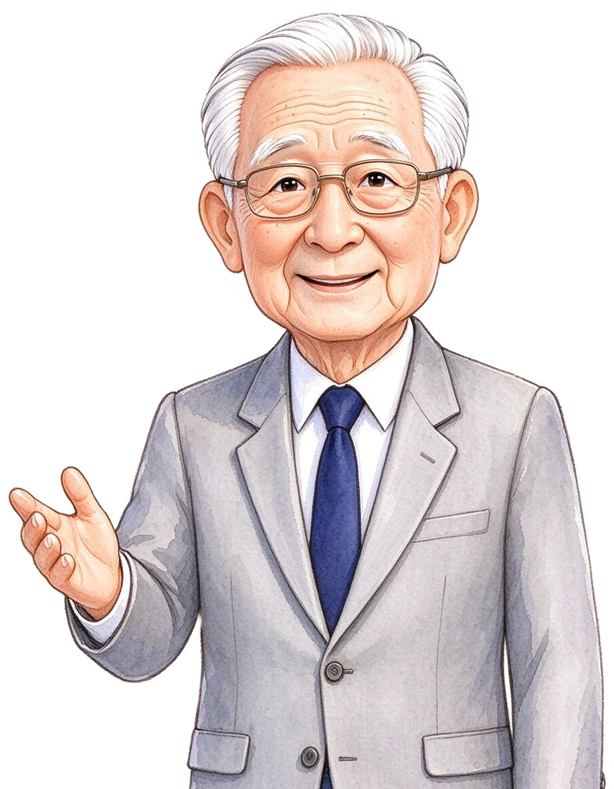
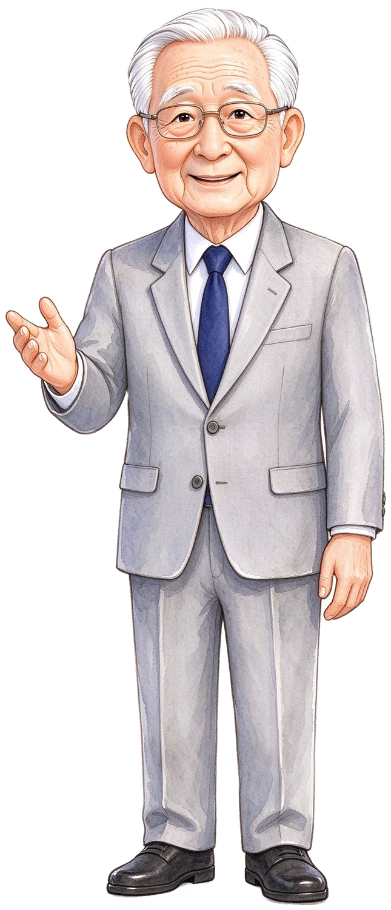
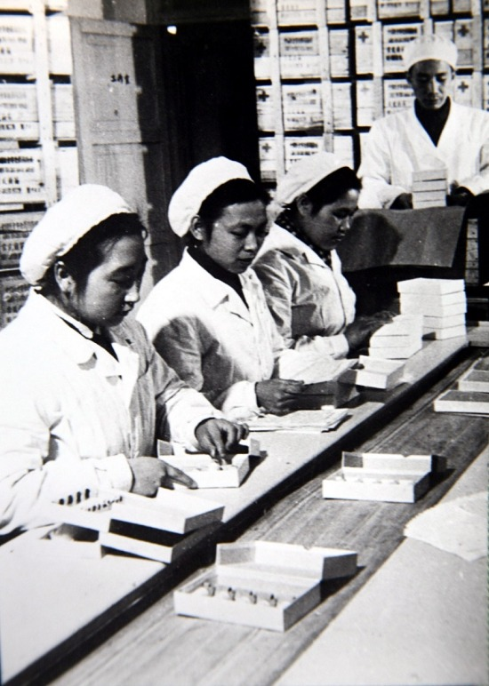
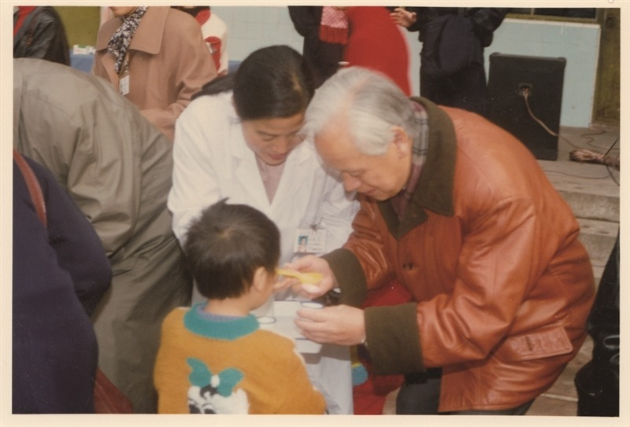
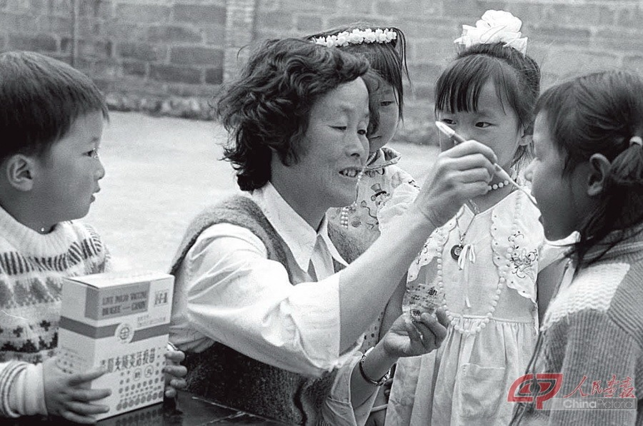
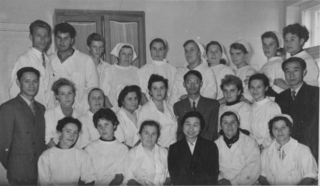
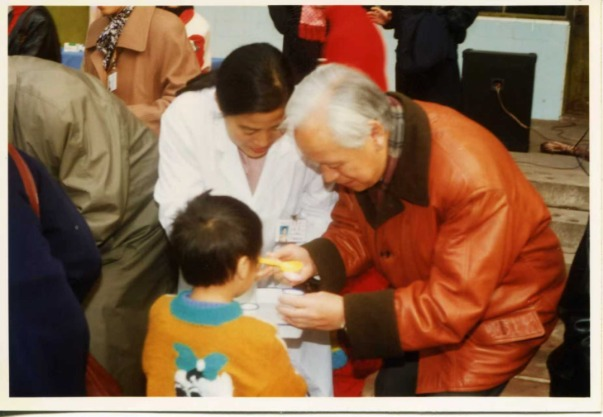
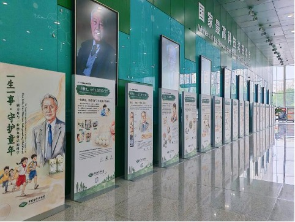

糖丸做多大呢？
滨江小学 薛景
滨滨 · 江江
语音来电…
通话中…
喂——你好呀。
（没接。要不……再按一次“接听”？）
按方向键，故事开始 →
滨滨 · 江江
通话中 · 00:01
“我们在中国科技馆，看顾爷爷的展览呢！”
👋这颗糖丸里藏着一个故事
1955 年 南通
一种“可怕的病毒”来了。
点一下，看当年那段影像

真实照片放进来就会自动替换：img/gufangzhou.jpg
他叫顾方舟，他把一句话，写在了心里。
点一点照片，看看他说了什么
“我要把这个病，
从中国消灭掉。”
第一站 · 顾爷爷面前的三个办法
打针
要有医生、要有针管，还得冷藏。
山里的孩子打不上。
药水
液体疫苗又重、又怕冻。
药还是苦的，孩子喝一口就吐了。
糖丸
裹上一层糖，香香甜甜。
不怕热、好运送，小朋友还肯吃。
糖丸，做多大才合适？
？
做太大，卡嗓子；做太小，药量不够。
点一下

第二站 · 糖丸该用什么量
小研究员们，要定大小，先得有把尺子。
第二站 · 认识我们的工具
直尺上，藏着什么？
糖丸，到底做多大？
先猜一猜：太大不行，太小也不行，那到底做多大？
“我们试了又试，糖丸定在——直径 1 厘米。”
一口能吞下，不卡嗓子 —— 这就是为什么是 1 厘米。
点一下顾爷爷，看他的答案
第二站 · 在尺子上找 1 厘米
哪一段是 1 厘米？
从 0 到 1、从 1 到 2、从 3 到 4……每一段都一样长。
相邻两个数字之间，都是 1 厘米
15 个 1 厘米手拉手 ＝ 一把 15 厘米的尺子
第三站 · 用尺子试一试
把尺子拖过去，让 0 刻度贴住糖丸的左边
就是 1 厘米
0 到 1 是 1 厘米。
第三站 · 把 1 厘米记在手上
用两个手指，捏住这一段
捏住，再把它轻轻抽走。
手指别动 —— 两指之间留下的距离，就是 1 厘米。
以后想不起来 1 厘米有多长，就比一比这个手势。
第三站 · 小组活动
1 厘米百宝盒：估一估，量一量
分工合作：估一估 → 量一量 → 分一分 → 放回。
先估一估，再点一点，看看它是不是大约 1 厘米。
这些大约 1 厘米的小东西，就是我们的“1 厘米小助手”。
第三站 · 身体里也藏着 1 厘米
食指的宽度，大约就是 1 厘米。
以后想不起来 1 厘米有多长，就比一比这根手指。
第四站 · 认识几厘米
几个 1 厘米，就是几厘米
第四站 · 换个起点
从 3 到 8，是几厘米？
从 3 到 8，也是 5 厘米。
把紫色条子拖一拖 —— 拖好之后点一下尺子，看它是几厘米
第四站 · 排一排
生产线上，把糖丸一颗一颗排起来
第 1 颗对着 1，第 2 颗对着 2……第 10 颗对着 10。
10 颗 ＝ 10 厘米。
第五站 · 检验糖丸合不合格
每颗糖丸，都要量一量

糖丸做出来了。可是——
每颗糖丸都要量一量：是不是正好 1 厘米？
点一下气泡，接下任务
第五站 · 哪种放法更放心
量一块橡皮，两种放法，对着的都是 4
放法一
左端，没有对着 0 刻度线
对着 4，可它不是 4 厘米——左边还空着一截没算进去。
放法二
左端对准 0，右端对着 4
从 0 开始数，对着几就是几厘米，不用再数。
对准 0 刻度线，直接读右边。
第五站 · 量法要点
量长度，记住三句话
放正
尺子放平、放正，贴着要量的东西。
放斜了，量出来就比实际长。
对「0」
0 刻度，对准物体的左端。
对准的是 0，不是 1。
读数
右端对着哪个数字，就是几厘米。
读出数，写上单位。
一放正 二对「0」 三读数
第五站 · 错在哪儿
他们量得对吗？错在哪儿？
图一
再想想：左边没有对着 0。
对！左端没对着 0 刻度线。
图二
再想想：尺子没有放平。
对！尺子放斜了。
图三
对！又平又准，从 0 数到 3。
再看看：左端对着 0，右端对着 3。
第五站 · 挑战一下
尺子断了，0 刻度没了，还能量吗？
2→3、3→4、4→5、5→6、6→7＝ 5 个 1 厘米。
7 − 2 ＝ 5（厘米）
5 厘米。
第五站 · 检验这颗糖丸
把 0 刻度拖过去，贴住糖丸的左边
每颗都做到 1 厘米，药量才一样
1 厘米 —— 合格。

我是医生，自己的孩子都不敢吃，
怎么让全中国的孩子吃？
点一下，让这句话浮出来
第五站 · 说句话
如果顾爷爷就坐在这里，你想对他说什么？
也可以在下面自己写一句，寄给他。
第六站 · 给糖丸画标签
小研究员们，糖丸合格了！每一颗，还要贴一个小标签。
请小研究员画一条 4 厘米的线段，当标签的边线。
点一下气泡，领任务
第六站 · 画一画
画一条 4 厘米长的线段
两个端点，中间一条线。这条线段长 4 厘米。
第六站 · 它走了多远
这颗小糖丸，坐上火车出发了

1960 年开始，这颗 1 厘米的小糖丸上路了。
装上火车、汽车、马车，走到中国每一个村子。
点一下，看它走了多远
糖丸发往全国。
第七站 · 2000 年的好消息
四十年后，一句宣布
2000 年，世界卫生组织宣布——
中国被确认为无脊髓灰质炎国家。
再也没有孩子得这种病了。
点一下，听这句宣布
第七站 · 这条路有多长
从 1958 年到 2000 年
每一年会自己亮起来 —— 也可以点一下某一年
第七站 · 一生一事
一个人，一辈子，一件事



一生一事，守护童年。
点一下，让三张照片亮起来
第七站 · 接力棒
这之后，疫苗还在一次次更新
今天的疫苗更安全了，打一针就够了。
从糖丸到滴剂，一代代研究者接着做下去。
2026 年
顾方舟诞辰 100 周年
接力棒，传下来了。
尺子上的 1 厘米，是冷的。
可是有人，把它捂热了。
点一下，让这句话自己出来
🖐 再点这里，走进顾爷爷的展览
“一生一事，守护童年” 0°
滨滨 · 江江
视频通话中…
通话结束 · 40 分 00 秒
好啦，故事就讲到这里——回家讲给爸爸妈妈听吧。
再见！